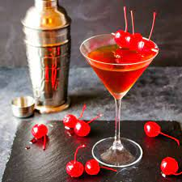

Whiskey mixed with sweet vermouth and a dash of aromatic bitters
Ingredients
- Ice
- 2 Parts Whiskey
- 1 part sweet vermouth
- 1 to 2 dashes bitters, such as Angostura
- Orange peel
- Real Marashcino Cherries
Directions
- Place ice in cocktail shaker.
- Add the whiskey, vermouth and bitters.
- Rub the orange peel around the rim of the cocktail glass
- Strain the drink into the glass
- Add 1 to 2 Real Maraschino Cherries and enjoy!